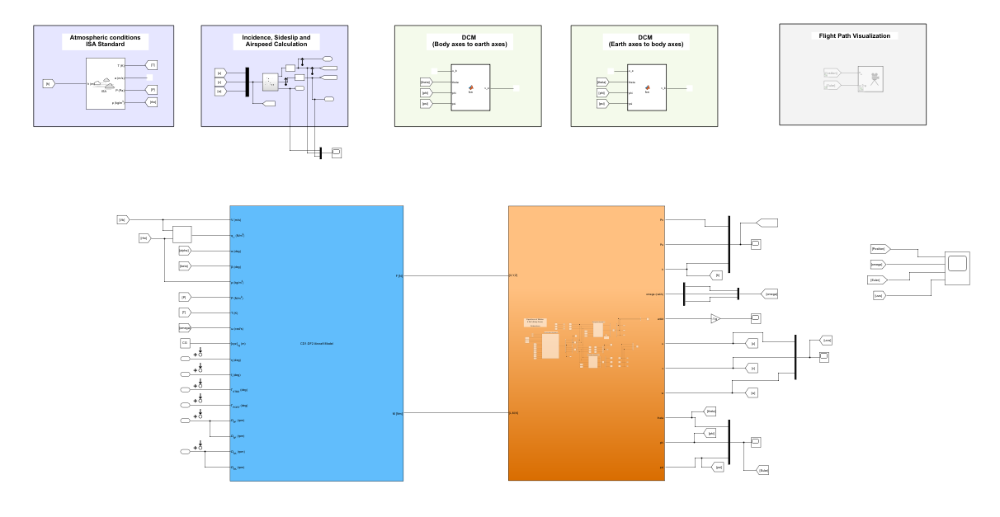
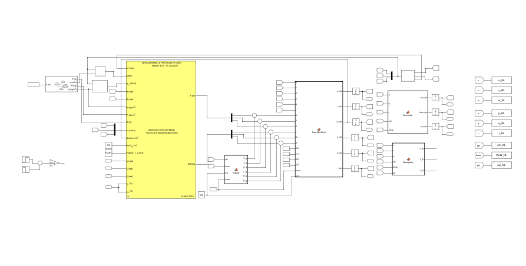
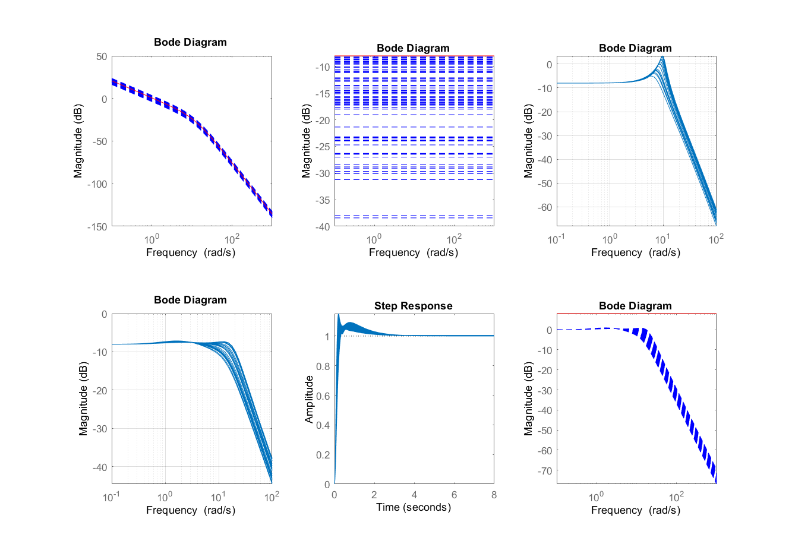
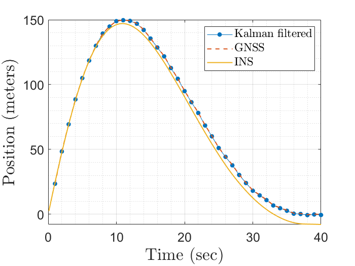
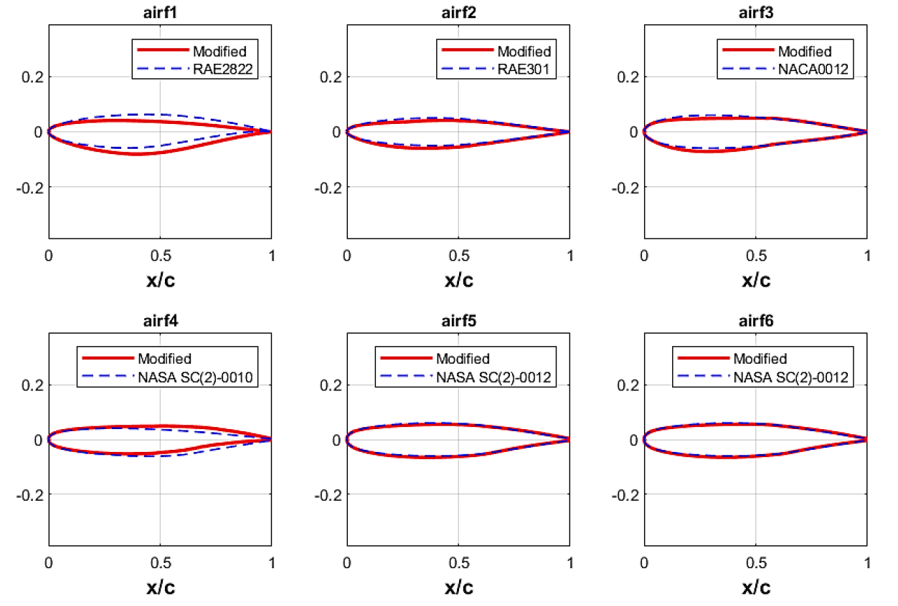

Modelled and simulated an eVTOL UAV with front and rear propellers, the front 4 propellers tilt while the rear remains static, to calculate correct trim conditions and derive linear trim models through perturbation.

Modelled and simulated SAAB 340, a non-linear twin engine commuter model to calculate correct trim conditions and derive linear trim models through perturbation.

The objective of the assignment is to use various techniques to analyze and design feedback controllers for a
simple system that analyzes the resulting model to determine its properties using frequency domain techniques (Bode, Nyquist and Nichols). In addition, both a P+D controller and a state feedback controller were designed. The robustness of the P+D controller is analyzed using the small-gain theorem.

A farm drone typically flies 100 – 120 m above the local ground surface, with an airspeed of up to 40 m/s. The INS provides navigation continuity between RTK GNSS position fixes every 1 s and for up to 20 s in case of loss of GNSS signal. It is able to estimate position with an uncertainty of up to 1 m (all three axes, 1 st. dev.). A separate sub-system is used to control the drone during the ground proximity tasks of take-off and landing; the two sub-systems should integrate well.

The aim is to maximise cruise performance with a safe buffet margin using industry methods to design a transonic wing. The wing design exercise has the freedom to vary absolutely everything (aerofoil sections, twist, sweep, crank or no crank, dihedral etc.) EXCEPT that the wing must be delta planform.

This project aims to understand the fluid flow and estimate the aerodynamic forces and moments in the hover and transition phase of a tilt-rotor aircraft CD1-DF2, considering the aerodynamic interactions for rotor-on-rotor and rotor-on-wing. Transitional aerodynamics were performed with simulations of the propeller at various rotation angles and with stacked motion in FlightStream and developed a theoretical model from the existing literature on the inflow dynamics of a propeller in transition, which was used for data validation.